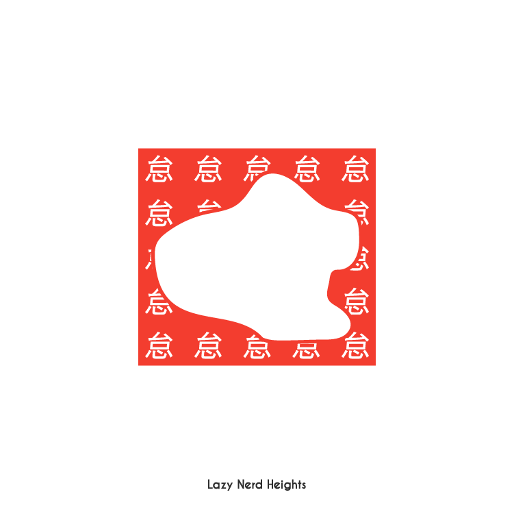
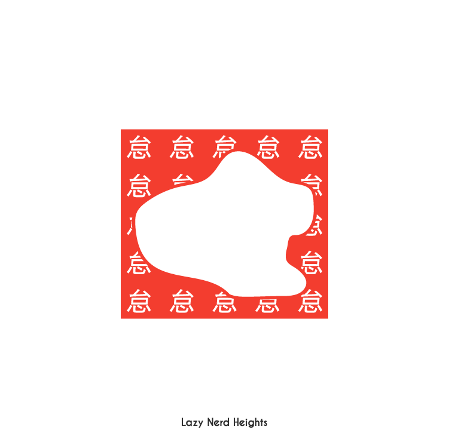

| DESINGER | fumiko yamamoto |
その他の作品
iDp
collage / graphic design
モノクロの証明写真に本人の好きな魚と花をコラージュする実験。

AtoZ Graphic
graphic design
AからZまで、それぞれが頭文字になる単語でグラフィックを作るチャレンジ。

Fashion Analyzer
Media Art (Kinect)
openframeworksとKinectを使ったメディアアート作品。服から代表色を抽出して雰囲気を可視化する。

CHINESE TYPOs
graphic design
中国語を使って作ったデザイン。異国の文字をグラフィックとして捉える試み。